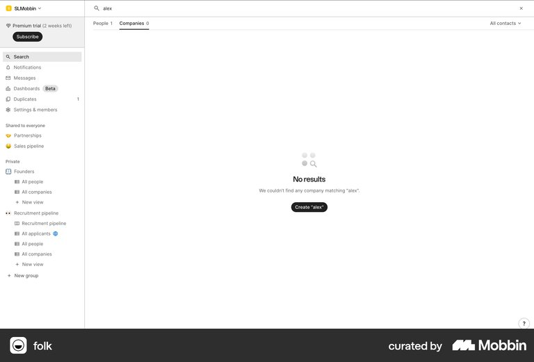
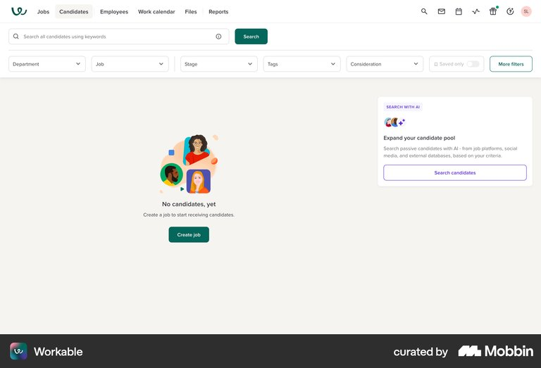
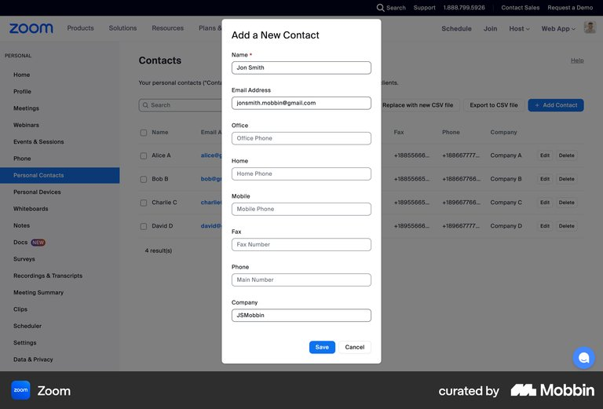
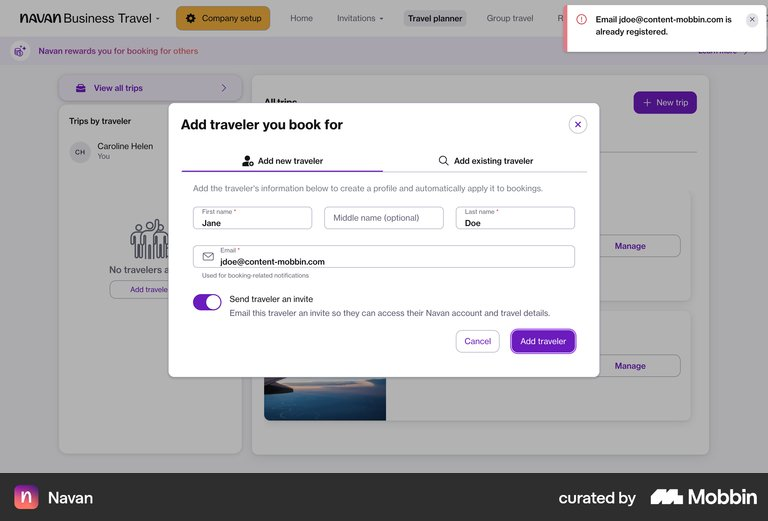
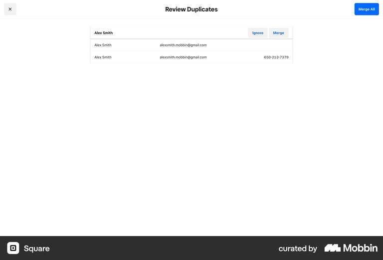
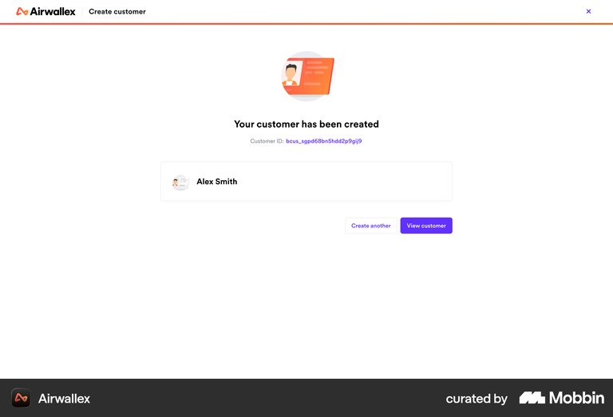

Stage 02 · /design-competitor-research
How does anyone
else do this?
Seventeen real product screens, pulled from Mobbin, read one at a time — to settle four specific decisions. Not to fill a slide with screenshots.
The brief · five search angles · 17 references · two deep dives · where we rejected the pattern
The prompt that ran the whole chain
One sentence, three skills
The order
Why the PM went before the research
Both skills carry the same rule for the same reason: a competitor claim that ends up in a PRD gets verified before it's used. So the order became brief → research → verify → PRD. Never research-then-justify.
If research goes first
You get a gallery
Interesting screens, no decision. Somebody then writes a spec that cherry-picks whichever screenshot supports it.
If the brief goes first
You get an argument
The brief names the decisions. Every reference either moves one of them or gets cut — including the pretty ones.
Either way
Read the code first
Before writing the brief, the PM read the actual repo rather than trusting the workshop description. That changed the task.
Before any research · reading our own code
The moment this feature depends on doesn't exist
So the Find Customer search field does nothing, and the results table always renders all ten mock customers. The "agent searched and found nobody" moment — the one the entire feature is a response to — was not reachable in the product.
That went into the brief as the "us, today" row, and became an open question the PRD had to answer. Research can't find this for you. Only reading your own code can.
The handoff · RESEARCH_BRIEF.md
Four decisions, and a refusal
The brief deliberately did not say "research create-customer screens". It named the four decisions at stake and refused anything that didn't serve one of them.
Plus our user in one paragraph — a care agent with someone waiting on the line — the five search angles, the matrix dimensions, and the "us, today" row pulled from real file paths.
Searching Mobbin
Five angles, not one query
"Customer create edit delete list" returns noise. One intent per query, limit: 5–8,
and look at every image — metadata tells you nothing.
17 references, every one downloaded locally as a JPG — because Mobbin's image URLs expire, and that folder is what gets dragged into Figma.
The evidence · 6 of 17 shown
Real screens, one decision each






Deep dive 01 · folk · take
Don't make them type it twice
The searched term is carried into the action label itself, so you can see what you're about to create before you commit.
Why it reframed our task. "The create screen" became "the search fields are the create form's first draft". Nothing gets re-typed — which for an agent mid-call is seconds of live silence saved.
Also visible: a persistent "Duplicates 1" queue in the left nav — the same idea as Square.
Deep dive 02 · Navan · take
A duplicate is a routing problem
The modal is split into two tabs: Add new traveler and Add existing traveler. Creating and finding are offered as the same task.
Reported as a toast while the modal stays open and filled.
Why this was the best find. Navan is the only reference where adding a record has real consequences — and the only one that both warns and offers the existing record. That correlation is the whole argument.
Everyone else either blocks you dead (Surfshark) or shows red helper text and leaves you stuck (Biosites, The Leap).
The variance · where our decision actually lives
Two places we rejected the majority
Surface · rejected
3 of 6 use a modal. We chose a route.
A modal's whole benefit is protecting your place in the list. CEP's session tabs already do that — and they survive an interruption.
A modal dies the moment the agent switches tabs to take another call. Interrupted is the normal case for an agent, not the edge case.
Fields · rejected
Not one of the 17 required more than two. We require three.
Name, Personal ID, and one reachable number.
A name-only contact is fine in Zoom. A name-only telco subscriber is unfindable and unbillable — Find Customer searches by identifier, and this data lands in billing.
This is the part that makes it research rather than a screenshot dump. "Everyone does X" is the start of the analysis, not the end of it — you still have to say whether X was designed for your user.
The honesty slide
What the screenshots can't tell us
our duplicate banner
Inferred, not observed
No reference does what we're proposing. It's a synthesis of Navan's intent and Square's candidate-list layout.
Labelled inferred in the findings, the deck, and the PRD — in those words.
the matrix
"Success" is mostly blank
The column is almost entirely "Not visible" — a screenshot cannot show what happens after Save.
Saying that is more useful than filling the column with guesses.
the library
Mobbin has no Amdocs
Our real competitors aren't in it. What we have is adjacent pattern precedent — valuable, but a different claim.
Calling this "competitive analysis" would be a lie.
Every claim in the findings carries a confidence label. Credibility is the whole asset — one invented behaviour and nobody trusts the other sixteen references.
Stage 02 · takeaway
Research earns its keep when it argues with the pattern
Seventeen references agreed on one required field and a modal. We took the speed and rejected both — because our user is interrupted mid-call and their typos land in billing.
Next: the four decisions went back to Daniel as explicit choices with the trade named. All four approved — and approving one of them exposed a blocker that would have shipped a 404.